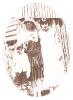
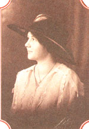
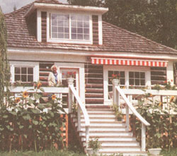
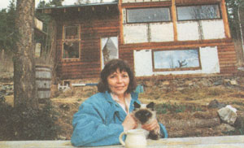

The strength of tending house and home alone.
Throughout my childhood, summer and Nanny's log house on the hill above the waters of Shuswap Lake were synonymous. The dwelling, which was built by my grandparents in 1930, was painted canary yellow on the outside with plaster between the logs. It was half-surrounded by a roofed-in Virginia creeper woven porch. Alternately perched and sprawled there, on boards routinely swept with a wet broom by Nanny, I found one of my favorite places on Earth. Now and then, the dancing of leaf shadow on the pages of Robinson Crusoe or What Kady Did would be enough to send me into a trance, broken only by my twin sister's foot tapping. As a child Donna hated to read, but what we shared in the cool, roomy house was a haven.
At Nanny's I also entered the dichotomy, of a farm ceasing to function while the land remains in all its glory. Since Nanny's husband Papa Bert died, the barn stood empty and the root cellar had begun to collapse. Despite the decay, bumblebees swam their slow wake through a world of emerald grass, clover, and plantain while the aroma of cottonwood buds, cherry blossoms, and fresh-turned earth drifted across the yard.
Nanny did her best to endow me with domestic smarts, but I was happiest romping with my sister through the field toward the unpruned orchard where robins and warblers sang. Before long a plaintive call of, "Come, girls, where are you?" would waft across from the porch. While Nanny's outside voice was frail and distinctly feminine, inside she was capable of a good, solid bellow if necessary. So we'd scamper back.
In those days Nanny seemed tall, elegant, and capable. Her silver hair hung in clouds beside her full, worry-laden checks. Nanny had beautiful hands and a light touch at the piano where she played songs, like Mendelssohn's "Woodland Echoes." The deafness that had afflicted her sine the age of 30 played havoc with her sense of tone. A cord traveled in tributaries to her ears from a small gold box nestled in her bosom. It squealed horrendously, and she would yank it out and spin it in frantic attempts to tune in the world.
Nanny's love manifested itself in work. Even her barking was an expression of love for us, the wayward pups. With sound heels she would march across the hardwood expanse, broom in hand, armed against any insurgence of dust kittens.
If Nanny wasn't latching the handle onto a freshly heated flatiron, ready to dash it across the surface of every scrap of laundry right down to the underwear and dish rags, then she was at the baking table. She stood in her pink housedress kneading bread, beating cake, and rolling out what Nanny, her son Don, and a boarder in the 1930s. amounted through the years to thousands of pies.
There was often the smell of paste wax and simmering; pot roast, and the order to "STAY OF THE KITCHEN FLOOR!" as we sped past, the slam of the screen door igniting a flurry of flies. On her hands and knee, with her housedress hoisted and tucked in, for the thousandth time, Nanny would scrub and wax the kitchen floor, the seam of her nylon stockings advancing backwards across the citrus-toned linoleum.
She had never in her life donned trousers. She would wrinkle her nose at our jeans and say "ish" Then scold, "Why don't you girls ever wear dresses? Gosh, what awful pants!" We'd end the discussion by wheeling away.
Nanny gave us a sense of order. One of her mottoes was "a place for everything and everything in its place." She also gave us a strong sense of love. She didn't have a career. Her purpose and passion was her house, and the energy that she brought to cooking and cleaning could have matched the gusto of any top-flight executive. With two children of my own to care for, and the thousand details I have to shape into the four walls of our home, only now can I appreciate Nanny's care of that cabin.
Nancy Parkinson also lives alone in a hilltop home looking over Shuswap Lake, though I've no doubt my grandmother would have regarded her 33-foot post-and-beam adobe castle with some degree of alarm. After all, in this climate, moss sways from the trees and the earth can vanish for months beneath a shawl of snow. But as Nancy says, despite much popular theorizing to the contrary, "Adobe works, even in cool, wet regions."
As I enter her house, unassuming from the outside, I see what she means. From my vantage point in the 12' x 16' kitchen I see that the house has evolved into a cozy, peaceful three levels. In contrast to the densely forested laid, the white adobe walls conjure up visions of untouched desert spaces.
A petite five foot one inches, Nancy assures me "you don't have to be big or strong to build a house." She describes her upbringing as small town, bereft of both city smarts and country smarts. "My dad wasn't a Mr. Fixit kind of guy," she told me. "I didn't know the difference between a saw and a hammer until I came out here."
After earning a degree in psychology from the University of Guelph in Ontario, Nancy departed for B.C. with a friend and began what she called her "second childhood," in which she learned about all she could do for herself. For two years she lived in a tepee on land owned collectively, and despite no small amount of hardship, she was determined to stay. When she lost that home, building her own seemed the only option, but, she says, "There's nothing trickier than saying you're going to do something when you have no idea how."
It was her affinity for bent trees that lured her to her present site. At the outset Nancy had to save for two weeks simply to buy a hammer. Then for the next three years she spent half her year in a puny $50 trailer and worked in Vancouver during the winter in order to save enough money for a truck. She wandered the alleys scavenging potential building materials.
Inspired by her neighbors, Eric and Diane Lutjen, who had built a house of mud brick, Nancy settled on adobe, a method that takes much time but next to no money. She made her own bricks and kept track of every penny. "The original 28' x 14' house cost $3,000 when I moved in. All my lumber was seconds and I framed with two-by-sixes." She avoided using traditional 2 x 4s in order to accommodate a sod roof. Sod is a great insulator. but is tremendously heavy.
For the first year, house building be came an obsession with Nancy. She thought, breathed, and dreamed it, and was initially fanatical that she do ever thing herself. The neighbor who dug the building site let Nancy run the excavator and she felled every tree with a chain saw. She did grudgingly allow Eric Lutjen to pull the logs over to the building site by horse without her assistance.
Even so, gaining the respect of local builders was another matter. She remembers the looks of skepticism at the hard ware store when she announced her intention to build an adobe house. "I learned to get eye contact and keep it like little barnacle and I followed them around until I got what I wanted."
A worker at the local gravel pit where she went to get rocks for her foundation offered to haul a truckload up the hill for her. But when she arrived home she found he had ignored her "Put Them Here" sign and dumped not one but two truck loads-a hill of rock-right on top of her building site. Nancy proceeded to remove every rock so that she could continue working. Some were so large they could only be rolled. The joker chuckled for years over this.
Nancy believes her ignorance was a gift. "When I had a problem to solve, the solution could come from any direction rather than simply the one dictated by tradition. I was this wide-open book."
The original house was framed with a hand saw. Later Nancy went to work as a cook for a log builder and, due to her keenness, was taken out of the kitchen and put on the crew. She became adept with a chain saw. Instead of tossing salad and frying steaks she learned to cut notches and to flatside logs.
Surprisingly, the most difficult part of the entire building process came at the very beginning. She was plagued by nightmares, and her failed attempts to build a sawhorse drove her to despair. If she couldn't build a sawhorse, how could she possibly build a house? She sought the ad vice of Jannis, another female builder in the community, and Jannis advised her to "just keep plugging along." Nancy repeated this motto like a mantra for four years.
From the time that Nancy laid the first rock in 1981, it was a solid year of work before she was living in her house. At that point, one wall was her old tepee canvas, but it was good enough for shelter. It was complete to the point that "regular folk would live in it" in three years.
Nancy holds a certain reverence for mud brick. "It might be because they have such a part-of-the-flesh feel to them, and so much of you goes into each and every brick. If you're a person that likes curves and shape, clay is the way to go.
"You don't have to live in Mexico to make adobe brick work. The material is totally accessible and cheap. You don't have to take out a 30-year mortgage simply to have a house. And it doesn't check, twist, rot, or burn." To top it off, this substance doesn't put further pressure on our declining forests. Even so, Nancy admits that if there were strictly enforced zoning codes in her town, she could have run into problems. She adds, "There are bylaws that need to be changed to allow for this material in many areas. Don't just start making bricks or you're likely to hit some serious snags. Ask questions."
Sand provides the strength of the brick, clay provides the bond. After hoeing first the clay, then sand through a one-quarterinch mesh screen, Nancy mixed the two together, sprinkling in water until it was of pie dough consistency. She then put the mixture into a brick maker-a metal box with a long handle on it-which compressed the material. She claims it becomes intuitive after the first 100 bricks. Stacked to allow air flow and left to cure for one month, the bricks were then laid in place with a trowel and a looser mortar mix. One of her most important tools was a level, which enabled her to keep the bricks in line.
The south facing wall is two bricks thick with a space between them. Two hundred colored glass bottles are embedded in the wall. Nancy lucked upon them at a recycling depot on a trip to California. Getting the wax out of them wasn't easy, but clay adapts well to the bottles, which are not only decorative but also double paned. That insulation is an absolute must here in the land of the six-month winter.
Because of demands such as a roof and the need to close in the walls, Nancy didn't begin work on the chimney until late in the construction process-and late in the year. Had she done it in the summer it would have taken three days. Instead it took three weeks.
Nancy recalls, "Twenty below and I was out pick-axing the sand and dirt because it was frozen. I had to melt snow for water." Not only did she burn her hands with the lime, she also put her back out. "The chimney became a monument to strength," and as work progressed, many people dropped by with advice and help with the roof and floor. The town's skepticism was slowly lifting.
After I ask the obvious question, she chuckles, "This may be a castle of sand, but you can hose it down and you're not going to wash it away." Even so, as a precaution, Nancy opted for a four-foot overhang on her roof.
Now leaning back and reflecting, Nancy smiles, "At first a home is all grunt work and you're not getting any returns. But there's a point you reach in every project where the project takes you over. You're not having to think so hard about it anymore because, in a sense, it's thinking you. Some other energy or creative force is running you. At this point, you know you're the servant of this thing and you become humble:'
Nancy creates as she goes along. Often she wanders about her yard looking at odds and ends without any preconceived notion of how she will use them. "I try to keep my mind open. When I look at a tin can it's no longer a tin can. It's a cylinder with untapped building potential. It's exciting and invigorating that this process can't be put down on a blueprint."
A few years ago when Nancy was diagnosed with cancer, she felt like a stranger as she stepped back into her own house from a stint in the hospital. Her awe for the structure she had built gradually gave her the strength to proceed with the surgery that cured her. "Many times now I've pulled building that house out of my back pocket and put it in front of my face to give me the strength to take the next hurdle."
To her, 90 percent of the benefits of house building were spiritual. "In the normal female experience of life, we put out a huge amount of energy that is invisible. We don't see the huge pyramid of dishes that we've washed, the mountain of diapers we've changed. We end up with this enormous invisible that we can't touch. What a woman needs in her life is something visible that she has done."
My thoughts drift back to my grandmother. What would she have done if confronted with the miles of floors, the mountain of laundry, she had scrubbed in her lifetime?
...I see her standing in a field in a pink dress and essential broad-brimmed hat. At the center gleams a colossal pyramid. Every dish she ever washed has solidified into a massive china monument in her honor. I see her smile softly, shake her head in amazement, then the words fly forth, "Gosh, isn't it awful?"
...But the words can't extinguish the glow of pride.
|
Nancy believes that what a woman needs in her life is something visible that she has done. |
 |
 |
|
 |
 |
|